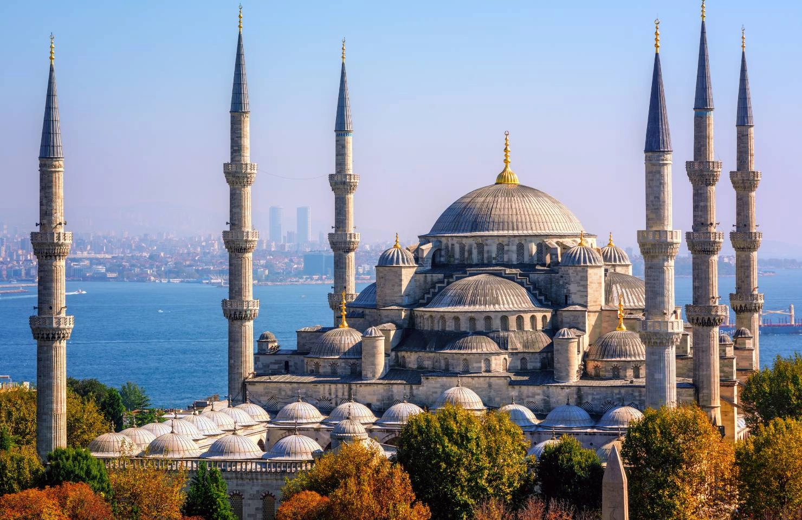

Istanbul Guide
Istanbul is a city you can approach in many different ways: through imperial history, a ferry crossing, a market alley, a long dinner, a neighbourhood walk or a quiet view of the Bosphorus. This guide is designed to give you useful answers before and during your trip.
Start Here
Istanbul sits between Europe and Asia and brings together historic landmarks, neighbourhood life, food, markets, art, nightlife and the Bosphorus. Official destination guidance also groups the city around the Historic Peninsula, Beyoğlu, the Asian Side, the Bosphorus, the Golden Horn, historic bazaars, the Princes' Islands and nature areas.
Food & Restaurants
From Turkish breakfast and meze to modern dining, learn what to eat and how Istanbul's food culture works.
Explore →Street Food
Simit, döner, balık ekmek, midye dolma and the small bites that make walking through Istanbul delicious.
Explore →Shopping
Historic bazaars, local markets, modern streets, malls and neighbourhood shopping.
Explore →What to Buy
Ideas for gifts, food, crafts, textiles, ceramics, coffee, tea and things worth taking home.
Explore →Museums & Culture
Palaces, museums, mosques, archaeological collections, contemporary art and living culture.
Explore →Parks & Outdoors
Waterfront walks, parks, forests, islands, Beykoz and family-friendly outdoor ideas.
Explore →Sports
Football, running, cycling, Bosphorus cycling, sailing and active ways to experience Istanbul.
Explore →Nightlife
Rooftops, neighbourhood bars, meyhane culture, live music and evenings around the Bosphorus.
Explore →Shows & Entertainment
Concerts, theatre, opera, dance, festivals and family-friendly cultural experiences.
Explore →Plan Your Trip
Once you know what kind of Istanbul you want to experience, these practical guides can help you connect the details.
First-Time Istanbul Guide
Start with neighbourhoods, transport, pacing and practical basics.
Explore →3-Day Istanbul Itinerary
A balanced three-day route for history, neighbourhoods, food and the Bosphorus.
Explore →Things to Do in Istanbul
Build a trip around the experiences that fit your time and interests.
Explore →Sultanahmet Guide
Plan your time around Istanbul's historic core, major landmarks and historic cisterns.
Explore →Balat, Fener & Specialist Museums
Go beyond the classic landmarks with neighbourhood culture, smaller collections and specialist museum experiences.
Explore →Galata & Karaköy Guide
Views, cafés, food, galleries and an easy route toward the waterfront.
Explore →Kadıköy & Moda Guide
Markets, food, cafés and neighbourhood life on the Asian side.
Explore →Bosphorus Guide
Public ferries, cruises, waterfront walks and private options.
Explore →Grand Bazaar Guide
What to look for, how to shop and what to check before a valuable purchase.
Explore →Turkish Breakfast Guide
What a Turkish breakfast includes and where to build a breakfast stop into your day.
Explore →Travel Services & Experiences
Airport Transfer Guide
Compare private transfer, taxi and public transport for your arrival.
Explore →Private Tour Guide
Understand how to plan a private sightseeing day around your interests.
Explore →Istanbul Private Guide
Learn the difference between a guide, driver and chauffeur.
Explore →Istanbul Food Tour Guide
Plan a food-focused day around markets, street food and neighbourhoods.
Explore →Yacht & Bosphorus Guide
Compare ferries, cruises and private boat experiences on the Bosphorus.
Explore →Luxury Experiences
Private tours, hammams, chauffeur service, dining and selected experiences.
Explore →Concierge Service Guide
Understand what a private concierge can coordinate in Istanbul.
Explore →Chauffeur Service Guide
When private transportation makes sense and what to confirm.
Explore →Choose Your Istanbul
For a first visit
- Historic Peninsula: Hagia Sophia, Blue Mosque, Topkapı Palace and Basilica Cistern
- Grand Bazaar and Spice Bazaar
- Galata, Karaköy and İstiklal
- A Bosphorus ferry or cruise
For a different side of the city
- Kadıköy and Moda
- Üsküdar and the Asian waterfront
- Balat and Fener
- Princes' Islands, Beykoz and green spaces
- Balat and Fener
- Eyüpsultan and Pierre Loti
- Eminönü and the fish market area
Getting Around
Public transport is a major part of Istanbul life. IETT provides journey planning, route information, airport and ferry guidance, metrobus information and other transport resources. For exact routes, service changes and live information, check the official transport source before travelling.
Explore More of Istanbul
Food & Restaurants
Explore Turkish cuisine, breakfast, meze, seafood, modern dining and neighbourhood food scenes.
Explore →Museums & Culture
Understand Istanbul through its palaces, museums, monuments, art and living traditions.
Explore →Parks & Outdoors
Find green spaces, waterfront walks, islands and quieter ways to experience the city.
Explore →Want to experience Istanbul, not just read about it?
Use this guide to plan your own day, or let our concierge team help with the practical details around it.
Request Concierge →